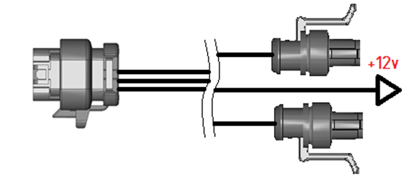

Gerätekonfiguration
Wofür die Gerätekonfiguration am Hectare Mini dient und wie Sie sie vorbereiten – nur das eine Gerät am Kabelbaum, die Ebene Agronom, das Menü Sensorkonfiguration.
Jedes Gerät im Sensornetz antwortet unter seiner eigenen Adresse. Die Adresse eines Kornsensors ist die Nummer seiner Reihe. Ein neuer oder ersetzter Sensor muss die richtige Adresse erhalten, bevor das Panel ihn finden kann. Das ist die Gerätekonfiguration, unter „Service“ → „Sensorkonfiguration“.
Vorbereiten
Trennen Sie alle Sensoren vom Kabeleingang des Kommunikationskabelbaums am Panel – dem vierpoligen Stecker.

Der Kabeleingang des Kommunikationskabelbaums: der vierpolige Stecker, der Kabelbaum und der Stromanschluss. Schließen Sie nur das Gerät an, das eine neue Adresse erhalten soll.
Schalten Sie das Panel ein. Nach dem Start meldet es „Verbindung weg“ für alle fehlenden Geräte. Schließen Sie die Fenster mit „HOME“.
Heben Sie die Ebene auf „Agronom“ an – Agronomen-Ebene aktivieren. Für einen HUB-8-Verteiler oder einen Fahrgassen-Aktuator heben Sie sie auf „Service“ an.
Drücken Sie „BACK“, um zum Hauptmenü zurückzukehren. Wählen Sie „Service“ und drücken Sie „MENU“.
Wählen Sie „Sensorkonfiguration“ und drücken Sie „MENU“. Das Menü listet die Geräte auf, die sich konfigurieren lassen.

Der Weg zur Sensorkonfiguration: Einstellungen, das Hauptmenü, das Service-Menü, das Menü Sensorkonfiguration.
| Punkt | Ebene | Wie |
|---|---|---|
| „Kornsensor“ | Agronom | Kornsensor konfigurieren |
| „Drucksensor“ | Agronom | Drucksensor konfigurieren |
| „HUB8“ | Service | HUB-8-Verteiler konfigurieren |
| „Fahrgas.-Aktuator“ | Service | Nur für den Servicetechniker. |
Die Regeln jeder Konfiguration
- Ein Gerät am Kabelbaum. Bei „Sensoradresse“ auf „AUTO“ nimmt das Panel das eine Gerät, das es findet. Antwortet mehr als eines, lehnt es mit „Mehr als ein Gerät im Netz gefunden!“ ab; antwortet keines, zeigt es „Keine Verbindung“.
- Die neue Adresse muss frei sein. Wurde das Gerät statt über „AUTO“ über seine aktuelle Adresse gewählt, prüft das Panel auch die neue: Benutzt sie schon ein anderes Gerät, zeigt es „Adresse: … belegt!“ mit der Nummer und ändert nichts.
- Jede andere Ablehnung lautet „Fehler #“ mit einer Nummer. Trennen Sie das Gerät, schließen Sie es wieder an und versuchen Sie es erneut.
- Prüfen Sie das Ergebnis: Trennen Sie das Gerät, schließen Sie es wieder an und kehren Sie mit „BACK“ zum Startbildschirm zurück. Das Gerät muss an seinem Platz erscheinen, ohne rotes Kreuz.
Ihre Maschine tut etwas, das diese Seite nicht beantwortet? Schreiben Sie an support@agriwelt.com — es antwortet ein Ingenieur.